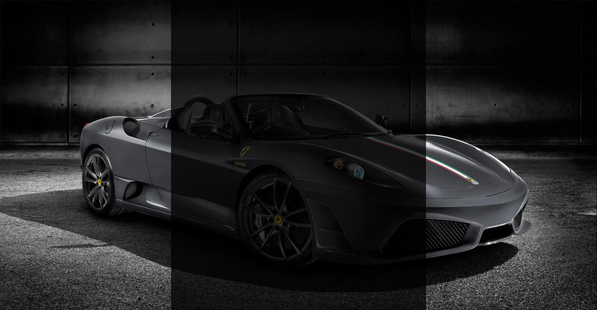
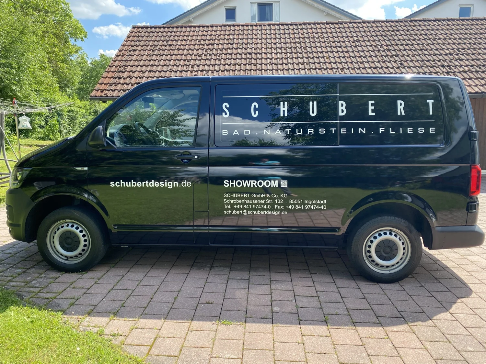
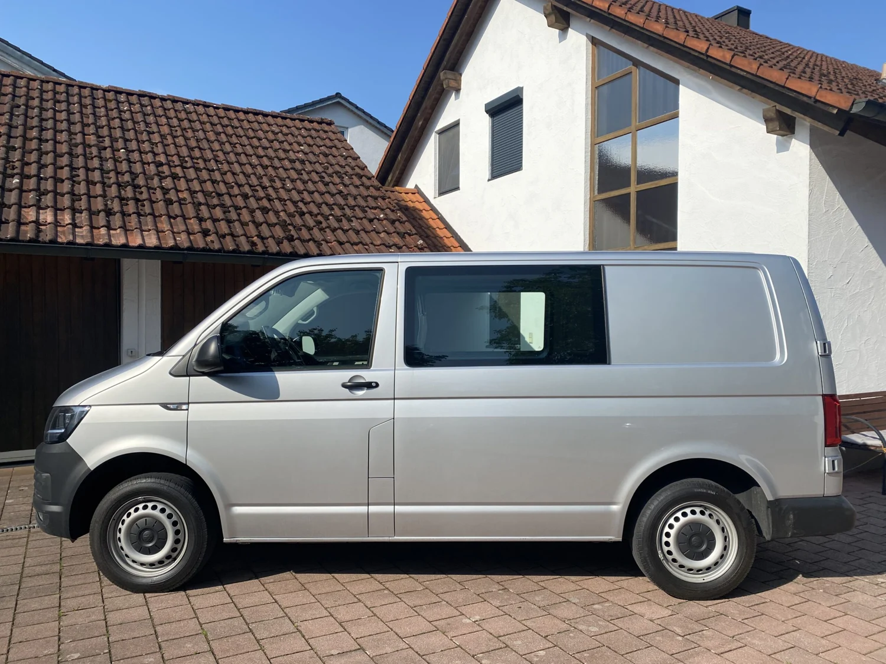
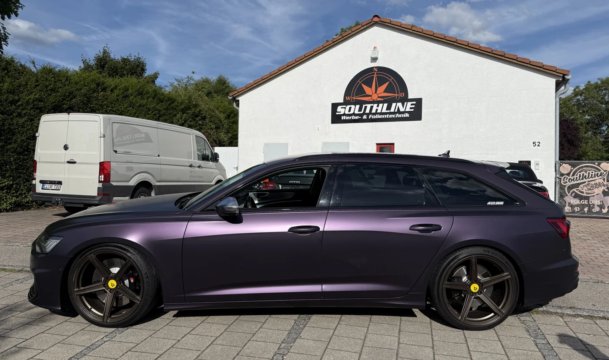

01
Car Wrapping
Ein ganz neuer Look. Voll-, Teil- und Designfolierungen, die zu Ihrem Fahrzeug passen.

Ihr Fahrzeug. Ihre Marke. Ihr Stil.
Wir bringen Ihre Ideen auf die Straße –
und weit darüber hinaus.
Ein neuer Look, zuverlässiger Lackschutz oder Werbung, die auffällt: Wir finden die passende Folie für Ihr Vorhaben.
Ein ganz neuer Look. Voll-, Teil- und Designfolierungen, die zu Ihrem Fahrzeug passen.
Ihr Lack verdient Schutz. Transparente Schutzfolien für beanspruchte Fahrzeugflächen.
Weniger Einblicke, mehr Wohlfühlen. Sonnenschutz und eine stimmige Fahrzeugoptik.
Aus einer Idee wird ein neuer Auftritt.
Entdecken Sie die Vorher-Nachher-Projekte aus unserer Werkstatt.


VORHERNACHHERVW Transporter · Vollfolierung & Fahrzeugbeschriftung
Regler ziehen oder mit Pfeiltasten bewegen
Mehr Einblicke. Mehr Inspiration.
Southline auf Instagram
Wir mögen Fahrzeuge mit Charakter.
Und Menschen mit eigenen Ideen.
Was 1997 in einer kleinen Hofgarage begann, ist heute Southline Werbe- & Folientechnik. Die Brüder Antun und Zdravko Pavlovic und ihr Team begleiten Ihre Projekte in der Region Ingolstadt und München.
Ob einzelner Schriftzug oder kompletter neuer Look: Wir beraten persönlich, denken mit und arbeiten mit Leidenschaft für jedes Detail.
Lernen wir uns kennenWir begleiten Ihr Projekt.
Vom ersten Gespräch bis zur fertigen Folierung.
Sie erzählen, was Sie vorhaben. Wir besprechen Möglichkeiten, Material und Wünsche.
Gemeinsam stimmen wir Gestaltung und Umfang ab. Sie erhalten ein individuelles Angebot.
Wir bereiten die Oberflächen vor und setzen Ihr Projekt mit dem Blick fürs Detail um.
Bei der Übergabe besprechen wir das Ergebnis und die passende Pflege Ihrer Folie.
In wenigen Schritten zur passenden Anfrage. Erzählen Sie uns von Ihrem Projekt – wir kümmern uns um die Details.
Jedes Projekt ist anders. Ihr Angebot richtet sich nach Material, Fläche und Aufwand.
Der Preis hängt unter anderem vom Fahrzeug, dem Zustand der Oberfläche, der gewählten Folie und dem Umfang ab. Nach einem Gespräch und der Prüfung Ihres Vorhabens erstellen wir ein individuelles Angebot.
Car Wrapping verändert vor allem Farbe und Gestaltung Ihres Fahrzeugs. PPF ist eine spezielle Lackschutzfolie, die beanspruchte Flächen vor äußeren Einflüssen schützt. Welche Lösung passt, klären wir gemeinsam.
Folien lassen sich in vielen Fällen wieder entfernen. Das Ergebnis hängt von Lackzustand, Material, Alter und Verarbeitung ab. Wir prüfen die Voraussetzungen und beraten Sie zur fachgerechten Entfernung.
Ja. Neben Fahrzeugfolierungen bieten wir Fahrzeugbeschriftung, Digitaldruck, Werbeschilder und Gebäudefolien an. Auch Möbel, Türen, Wände und andere geeignete Oberflächen lassen sich neu gestalten.
Besprechen wir, was möglich ist.
Kontaktieren Sie uns für einen persönlichen Termin.